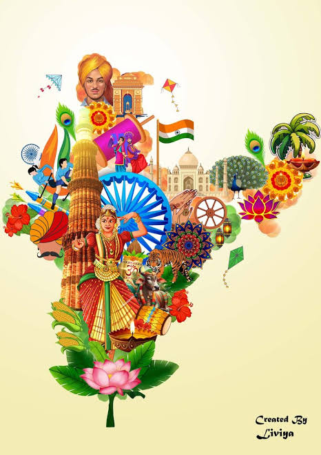

Culture & Geography
Indian culture is one of the world's oldest and most diverse, spanning over 4,500 years and characterized by a "unity in diversity" with rich traditions in religion, art, cuisine, and language. It is a blend of various cultures influenced by a long history, featuring widespread familial respect, festivals, and distinct regional customs.
India, the world's seventh-largest country (3.28 million sq. km), is a distinct subcontinent in South Asia, bordered by the Himalayas to the north and surrounded by the Indian Ocean, Arabian Sea, and Bay of Bengal. Its geography features diverse terrain including, mountainous regions, the vast Indo-Gangetic plains, the arid Thar Desert, and the ancient Deccan Plateau.